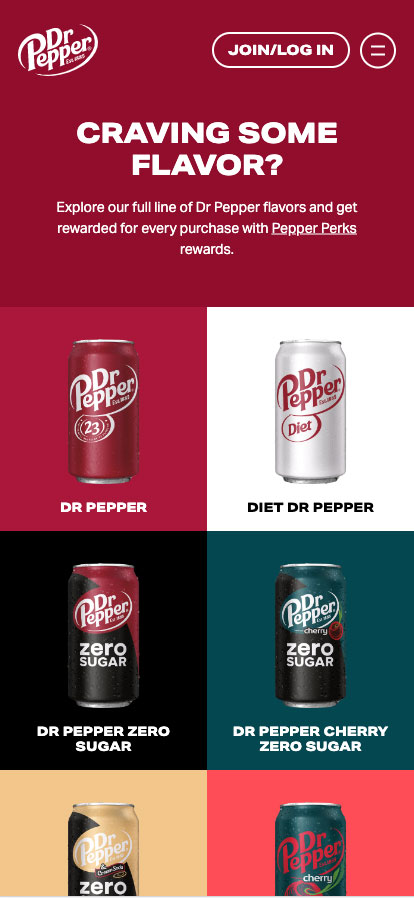

Contrast
Flux Academy | flux-academy.com
The Flux Academy websites displays contrast in a variety of ways. First, there is contrast found in the colors of the website. The bright purple stands out from the clean white background. Second, the bold header font contrasts from the smaller and thinner body copy. There is also a contrasting element found in the list numbers. They are large but the use of just an outlines makes them feel light while, again, the header is heavy. The use of contrast throughout the website shows the user what is most important and what they should look at first.
Alignment
Dr Pepper | drpepper.com
The Dr Pepper website has alignment throughout the entire site, but it is found in the products page especially. First, all of the text is center aligned, everything from the heading to the product names. Then there are the images. They are split into two rows and centered on top of each other and their names. Since the text and the images are all center aligned on one another, it creates a nice line for the users eyes to follow. It leads you through the webpage.
White Space
Glossier | glossier.com
Glossier is the perfect example of white space and clean design. All of the text and product images are surrounded by negative space. If you want something to stand out on a site, one of the best ways to achieve that is though white space. The user is drawn to the headers and the images because they stand out. There are no additional elements crowding the space or distracting the user. They show you what is important. It also gives the users eyes a chance to breathe and to move through the site without strain or distraction.